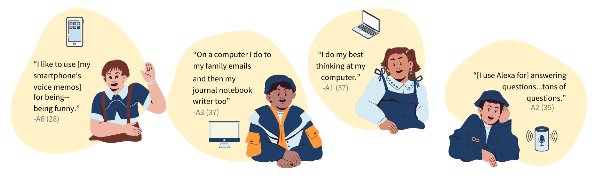

Research Project · Published · CHI 2024
Exploratory Technology Study with Adults with Down Syndrome

Abstract
Assistive technologies for adults with Down syndrome (DS) need designs tailored to their specific technology requirements. While prior research has explored technology design for individuals with intellectual disabilities, little is understood about the needs and expectations of adults with DS. Assistive technologies should leverage the abilities and interests of the population, while incorporating ageand context-considerate content. In this work, we interviewed six adults with DS, seven parents of adults with DS, and three experts in speech-language pathology, special education, and occupational therapy to determine how technology could support adults with DS. In our thematic analysis, four main themes emerged, including (1) community vs. home social involvement; (2) misalignment of skill expectations between adults with DS and parents; (3) family limitations in technology support; and (4) considerations for technology development. Our findings extend prior literature by including the voices of adults with DS in how and when they use technology.We talked with six adults with Down syndrome, seven of their parents, and three specialists in speech, education, and therapy to learn how people use technology in daily life. Four themes came up: differences between social life at home and in the community; different views between adults and their parents about what adults could do with technology; challenges families face in providing technology support; and ideas for designing better tools. This study put the voices of adults with Down syndrome at the center.